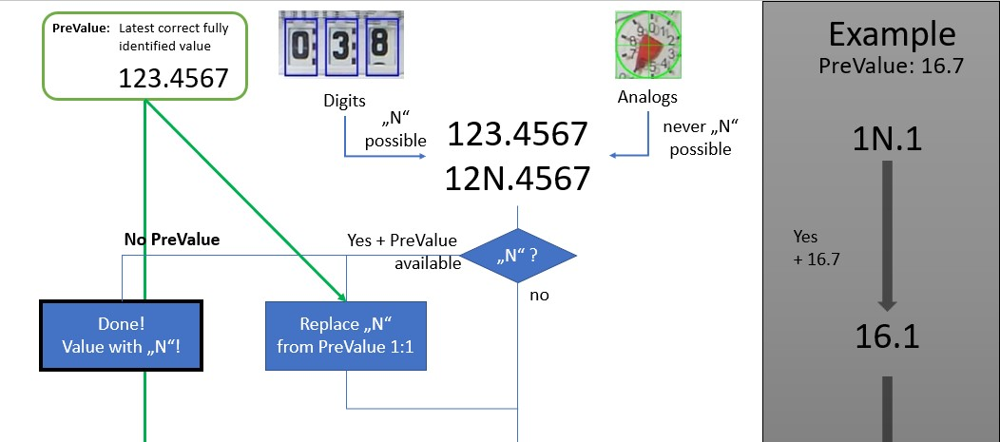
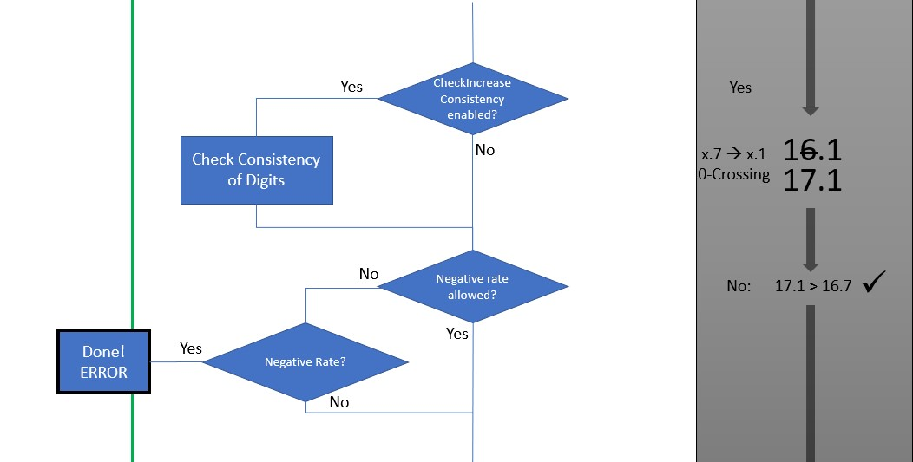

Correction Algorithm
After the digitization of the images and the composition to a number a checking and correction algorithm is applied. This is explained here.
There are several reasons, that a check might be necessary:
- In case of digits there is the output of "N" (=NaN = Not-a-Number) in case the digit cannot be detected correctly. This happens for example if the image shows a digit between to states
- The replacement of the "N" with a previous value could be not sufficient, due to the fact, that it might have changed.
- There is a misreading of one one of the numbers. This can always happen in case of neural network processing.
Terms and definitions
PreValue
The last correct read value. Either from a previous correctly identified value or manual setting by the user.
This is used to replace "N"s and make a check for the absolute change.
Digits
Value that are digitized from a digital number. There are 11 allowed values for this:
- Digits: 0, 1, 2, ... 9
- N = Not-a-Number - representing a not unique state between two numbers
Analogs
This are value derived from a pointer like meter. This never has the state "N".
CheckDigitIncreaseConsistency
If this is enabled an "inteligent" algorithm is used to derive from zero-crossing of discrete digit positions, if the number should have been increased. This is relevant because in some of the digit meters, the increase of a digit to the next number can be seen, before the subdigit has gone through zero.
For example: 16.6 --> 16.7 --> 1N.8 --> 17.9 corrected to 16.9 --> 17.0 --> 17.1
As you can see, the 17.9 is a false reading as the 7 is assumed to be already readable, although the subdigit has not crossed the zero. In this case the CheckDigitIncreaseConsistency algorithm will correct this to 16.9
A detailed description of the algorithm can be found below (not yet ready!)
Negative Rate allowed
Most of the meters only have increasing numbers and do not count backwards. Therefore a negative rate (= negative change compared to the PreValue) is surely a false value. This can be checked an flagged as false reading
MaxRateValue / MaxRateType
Here the maximum change from one to the next reading can be limited. If a false reading of the neural network results in a change larger than this, the reading is flagged as false. There a two types of comparisons possible
1) AbsolutChange: Here the difference between the PreValue and the current reading is compared directly, independent how much time has passed since the last reading. 2) RelativeRate: in this case a change rate in the unit of change/minute is calculated, taking the time between the last and the current reading into account. Be careful, that with increasing time, the absolute allowed change increases. Example: relative rate of 0.05 m³/minute --> after 20 minutes a maximum change of 20 minutes * 0.05 m³/minute = 1 m³ is possible. That means that a false reading of 1 m³ cannot be detected false after about 20 minutes in this case Assume, that there might me no change in the meter for hours (e.g. during the night) a much bigger change could also be accepted.
Flow Chart



CheckDigitIncreaseConsistency Algorithm
The check digit increase consistency algorithm is functional for the digits only. Due to the fact, that the rotation might be a little bit earlier or later compared to the zero crossing of the digit before, errors during the reading before and after a zero crossing can be wrong. Therefore a simple algorithm can be applied, checking the consistency of zero crossing and changes in the following digit. This is applied to one after the other digit, starting with the lowest priority digits.